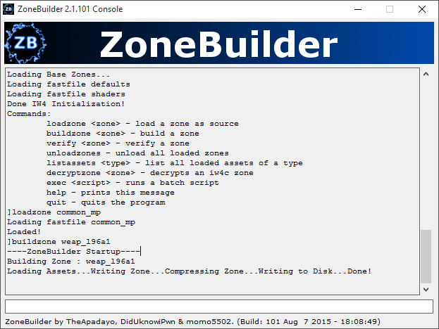

Info
The newest version of ZoneBuilder is officially available on the github releases page here: https://github.com/TheApadayo/zonebuilder/releases
It includes numerous new features from the original 1.0.0 release and 2.0.91
About the Project
ZoneBuilder is written by TheApadayo, DidUknowiPwn, and momo5502. The goal of the project is to create custom assets for the IW4 Engine by creating custom fastfiles. The source code is freely available on GitHub here.
If you wish to contribute or get involved with the project please contact TheApadayo on Steam (TheApadayo) or create an issue on the project page.
Screenshots:
Available asset types in Zonebuilder: